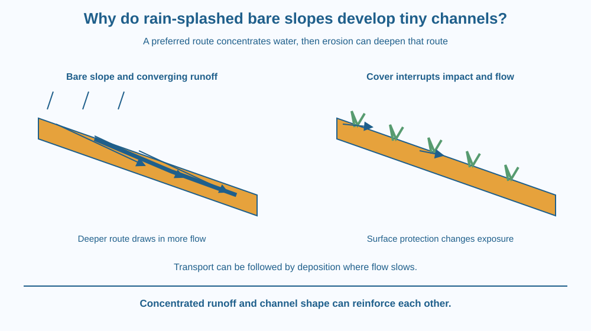

Explain how rainfall can produce narrow erosion channels called rills. Trace the transition from dispersed surface flow to concentrated runoff. Predict how cover, slope and flow pathways affect channel development without assuming that every rainfall produces the same erosion.
After rain, a bare sloping patch may have tiny channels that were not obvious before. Water has not cut every part of the surface equally. Instead it found some preferred routes, and those routes became more pronounced as the event continued.
Why would a shallow depression collect more water? How can flowing water make the depression deeper and encourage still more flow through it? These questions reveal a feedback process that differs from grains hopping through the air in wind erosion.
The transport medium here is water moving over the surface.
Rainfall can enter the soil through infiltration. Water that remains at the surface and moves downslope is runoff. Runoff can occur when rainfall arrives faster than the surface can admit it or when the soil is already sufficiently wet.
Raindrop impacts can detach particles from exposed soil. This is sometimes called splash erosion. Surface cover can intercept those impacts, reducing the direct disturbance of the soil beneath. The precise effect depends on the cover and the rainfall.
Initially, runoff may spread across many shallow pathways. Small differences in height guide more water into some routes than others. Where flow becomes concentrated, it can exert a greater local transporting effect and remove more material from the pathway.
A narrow, shallow channel formed this way is a rill. As water removes particles, the channel can deepen. The lower route then attracts more flow, which can increase its capacity to detach and carry material. This is a positive feedback between channel shape and concentrated flow.
The word positive here does not mean beneficial. It means a change can reinforce itself. A deepening route can promote further concentration unless the flow or surface conditions change.
Transport and deposition are linked. Water can carry detached particles while conditions support movement. Where flow slows or spreads, some material can settle out. Sediment at the foot of a slope can therefore be evidence of transport from above, although tracing its exact source needs more observation.
Slope influences how water moves, but it is not the only factor. Soil structure, surface roughness, vegetation, initial wetness and the way runoff is directed all matter. A compacted path can channel water differently from a rough vegetated patch beside it.
Rills differ from larger persistent channels often called gullies. School descriptions sometimes use practical distinctions based on size and whether ordinary cultivation can remove them. This lesson avoids inventing one exact width that classifies every channel in every setting.
Draw a sloping sheet with several faint routes. Make one route slightly lower. Send more water arrows into it, then deepen it and add more converging arrows.
You have drawn the feedback: a small height difference concentrates flow, erosion deepens the route, and the deeper route concentrates more flow. The water is not choosing a route deliberately; the shape guides its motion.
Now add a rough covered patch that spreads incoming water into several smaller routes. Predict how this changes the concentration. Keep the model limited to surface runoff so it does not become another explanation of deep groundwater recharge.
The SVG shows raindrops reaching a bare slope, shallow runoff lines converging and a small rill developing. A close-up highlights the lower channel floor and incoming water from neighbouring surface areas.
A second surface has cover and interrupted flow pathways. Labels connect cover with reduced raindrop impact and less concentrated surface movement. The comparison does not promise that any cover will prevent every erosion event.
A sediment patch at the bottom illustrates possible deposition. Arrow lengths are not measured velocities, and the diagram should not be used to calculate a real channel's rate of deepening.

During monsoon rain, a bare roadside slope or construction area can develop visible surface channels. Water routed from a roof or paved area may concentrate the input further. The place where runoff enters can therefore matter as much as the amount falling directly on the soil.
Farmers and land managers can use suitable cover and carefully designed flow management to reduce erosion. Local terrain and rainfall must guide the choices. A classroom explanation cannot replace an engineering assessment of a slope or drainage outlet.
Students should examine photographs or safe ground-level observations after conditions settle. Do not stand in flowing stormwater, approach unstable slopes or investigate roadside drains during rain.
Use a shallow tray, a sheet of aluminium foil already available in the kitchen, a little water and a towel for spills. Do this with an adult. Do not use sharp-edged cut foil or real loose soil.
This model demonstrates pathway guidance, not erosion: foil does not behave like detachable soil. Explain that limitation explicitly. No conclusion about sediment production or a real field's erosion rate can be obtained from this tray.
A bare slope receives the same total water in two trials. In one, the water is spread evenly; in the other, it enters through one narrow outlet. Why could the erosion risk differ?
Use local concentration rather than total volume alone in your answer. Then explain why reducing a channel at one location without considering the next outlet might simply transfer the concentration problem farther downslope.
What is a rill?
Answer: B — A rill is a narrow shallow channel produced by concentrated surface flow.
Why can a developing rill deepen further?
Answer: A — The deepened pathway can draw in additional runoff and reinforce erosion.
The same water enters through one narrow outlet instead of being spread. What may change?
Answer: C — Concentrating input can increase its local transporting effect even without more total water.
Design a diagram for a school garden slope that receives runoff from a path. Identify where water enters, where it concentrates and where detached material could accumulate.
Propose a way to protect the surface and spread or safely guide flow, while stating that real drainage changes need adult planning. Your explanation must show how the proposal interrupts the deepening-channel feedback rather than just hiding the rill beneath decorative material.
A tiny initial depression can influence a much larger flow pattern. Once water is concentrated there, erosion can reinforce the original difference. The visible channel is therefore both a result of flow and a feature that guides future flow, linking the history of the surface to what happens during the next event.
Runoff can concentrate into rills; erosion deepens the preferred route, and that route can then draw in more water and reinforce the channel.